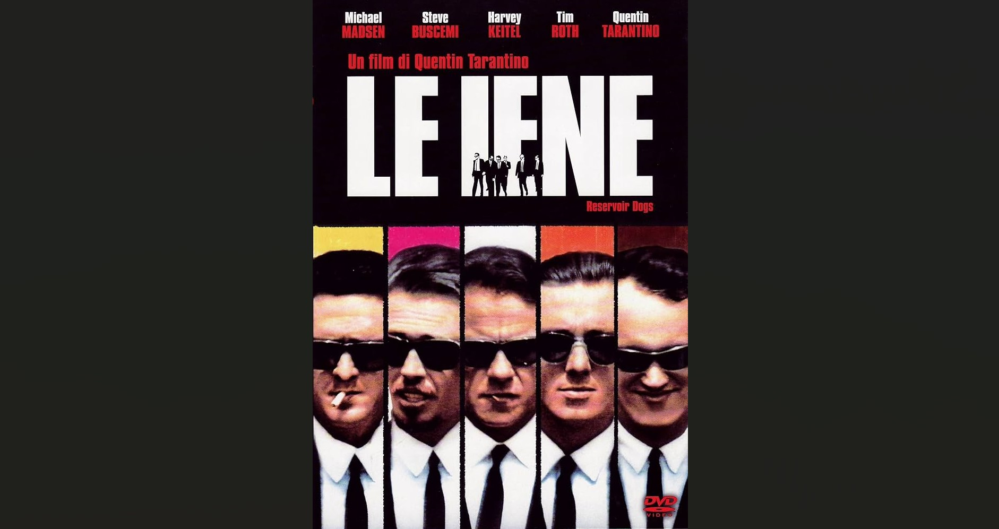
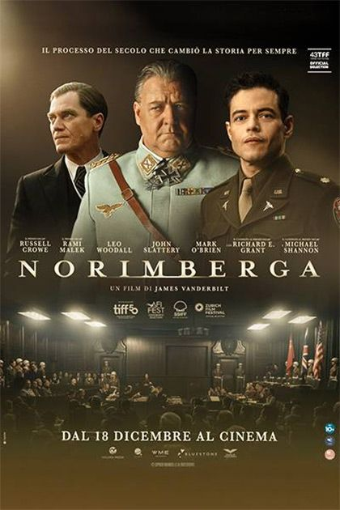
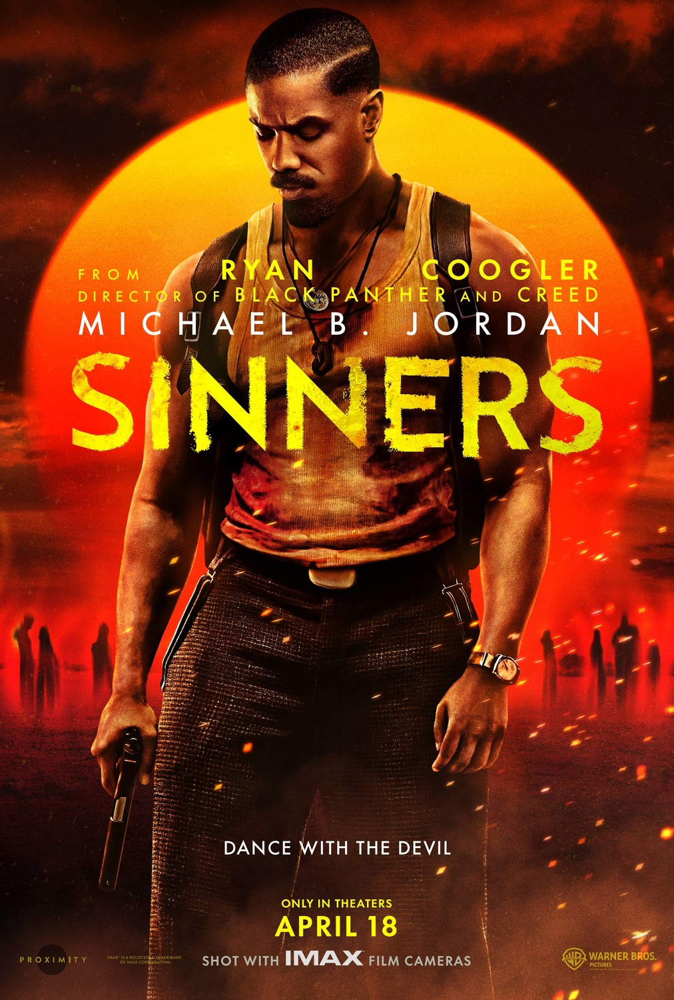

Le mie recensioni

Le iene (Reservoir Dogs) — 1992
Le iene - Quentin Tarantino
Recensione
Le Iene è Film calamitante, e sorprende perche lo è senza azione, ma si basa su puri dialoghi, sempre piccanti e chiari, ma che creano un patos per cui sembra che da un momento all'altro potrebbe succedere di tutto.
La storia è molto semplice sia chiaro, ma raccontata su più piani temporali, e analizzando i personaggi uno a uno, ti lascia sempre l'idea di volerne sapere di più su come si è effettivamente conclusa questa rapina, anche se lo sai dall'inizio che finirà male.
I personaggi sono azzeccatissimi, tutti pungenti. Lo spettatore si immedesima in Mr.White (Mr.Wolf in pulp fiction) che è il più saggio, altruista e puro nella massa di criminali, guarda caso è l'unico che non viene approfondito come si deve proprio perche ti fidi di quello che dice, e anche lui di cuore si fida di quello che gli dice Orange, e ci rimette la vita. È l'unico di cui sai il nome Lerry, proprio perché gli vuoi bene, e lui vuole troppo bene per il lavoro che fa.
Mr.Blonde, da quando entra in scena, è la scheggia impazzita, ha un carisma fuori dal comune, micheal Masden è infatti presente in quasi tutti i capilavori di Tarantino. E il sul nome è Vic Vega, fratello di Vincent Vega, john travolta di Pulp Fiction. Il suo personaggio, schizzofrenico e maniaco, è come un colpo di fucile carico, pronto ad esplodere.
Il fulcro di tutto è però Mr.Orange, la faccia più brutta e criminale di tutte, sai che è il più cattivo, e infatti il colpo di scena ti arriva dritto dal nulla. Per fare quello che ha fatto deve effettivamente avere un pino al posto del cervello, e infatti penso che alla fine se la sia ricevuta quella pallottola da White, che ormai sapeva di aver sbagliato tutto e che avrebbe finito i suoi giorni in galera.
Regia senza estremi picchi a mio avviso, di fatto sono lunghi piani sequenza di dialoghi a camera lontana, ciò che conta sono i dialoghi cioè la sceneggiatura. Essendo il primo film di Tarantino il hudget era irrisorio solo 1,2 mln (once upon a time 100). Spicca l'inquadratura sulla scritta "tony watch your head" mentre lo Mr.Blonde tortura Joe, e il tutto viene condito dalla musica, quella iniziale cult mentre camminano, e quella sempre durante la tortura, di sicuro la scena più elettrizzante della pellicola.
Questo è bel cinema, semplice si, ma bel cinema.
- Trama 8
- aspetto visivo (fotografia +costumi + locations) 7,5
- Colonna sonora 7
- Cast e interpretazioni 9
- Regia 7,5
- Coinvolgimento 9
TOTALE 8

L'avvocato del diavolo — 1997
L'avvocato del diavolo - Taylor Hackford
Recensione
L'avvocato del diavolo, di Taylor Hackford, è un film considerato da molti un cult della fine anni 90' e per alcune ragioni lo capisco, per molte altre lo rigetto.
E' un film che parla di tentazioni, di sete di potere, di allucinazioni e lucidità precarie. Il messaggio arriva, questo è sicuro, ma sarebbe impossibile non fare arrivare questi temi quando uno dei personaggi principali è il diavolo in persona.
La trama è semplice, un avvocato penalista invincibile, Kevin, si trasferisce nella grande città e ne viene travolto dai suoi eccessi, dai suoi lussi, a tal punto da perdere la rotta in tutti i sensi. Assetato di vittorie, mette in secondo piano la sua morale, difendendo imputati che sa di essere colpevoli, e gli affetti che ha intorno, Mary Ann, sua moglie, su tutti.
Proprio Mary Ann sembra essere l'unica in grado di cogliere che tutto quello che sta succedendo a suo marito ha del demoniaco, rigetta sin da subito un ambiente malsano, contorto e crudele. Lo dice più volte al marito che però ormai ne fa parte in tutto e per tutto.
John Milton, interpretato da Al Pacino, è il personaggio perno di tutta la pellicola, un satana sopra le righe, interpretato in maniera magistrale da Al Pacino. Si percepisce dalla prima scena che sia lui a manovrare tutto, come un burattinaio, portando Kevin di fronte a continue scelte, contraddizioni e tentazioni irrinunciabili.
Il colpo di scena è abbastanza telefonato, appare chiaro che ci sia un legame di sangue tra Kevin e Milton, ciò spiega il perché non abbia mai perso nonostante gli imputati fossero chiaramente colpevoli,
Lloyd Gettys, l'insegnante molestatore, su tutti.
La parte centrale, inutilmente prolissa e senza particolari guizzi registici (le apparizioni del diavolo nei personaggi sono sempre prevedibili e di poco impatto), culmina in un finale raffazzonato.
Il dialogo tra Kevin e Milton è sicuramente interessante, il diavolo abbraccia le imperfezioni dell'uomo, lo guida e lo tenta affinchè si dimostri per quello che è, ma lo fa lasciando il libero arbitrio nelle scelte, e facendo così si discolpa del suicidio di Mary Ann, colpevolizzando Kevin di averla trascurata.
La richiesta del diavolo di far unire i suoi due figli per creare un mondo dominato dal loro figlio, l'Anticristo, mi è sembrata eccessivamente esoterica, lontana dalla linearità del racconto, e forzata nel tentativo di dare uno scopo al Diavolo, a mio avviso non necessario.
Visivamente poi la scena conclusiva in cui Milton esplode di rabbia è talmente cartonesca da sembrare comica e il patos creato, sebbene poco, sfocia in una nuvola di fiamme che sembrano più una transizione di power point, o un effetto speciale di una YTP, che la conclusione di un film considerato un cult. La transizione finale, tornando indietro nel tempo, è poi una soluzione strategica per dare complessità alla narrazione e il fatto che kevin di nuovo si farà tentare dal diavolo per la sua natura vanitosa sembra annullare la scelta appena fatta da Kevin, in nome del libero arbitrio.
Mi chiedo quindi se gli stessi messaggi veicolati dal film, sul libero arbitrio, le tentazioni, il Dio denaro, la perdizione dell'anima e della morale, arrivino solo perché gli attori interpretano bene le loro parti, Kneanu Reeves e Al Pacino sono molto acuti, e penso proprio sia così, perché la narrazione è invece particolarmente ottusa.
Film modesto, nulla di più, nulla di meno.
- Trama 6
- aspetto visivo (fotografia +costumi + locations) 5,5
- Colonna sonora 6
- Cast e interpretazioni 7
- Regia 5,5
- Coinvolgimento 6
TOTALE 6

Mulholland Drive — 2001
Mulholland Drive - David Lynch
Recensione
Mi trovo in difficoltà nel commentare questa pellicola, è un puzzle intricato, illogico, mutaforma. Tutto sembra essere così dannatamente scollegato che sembra di vedere 100 film in 1. Due ore di film su due ore e 20 in cui continui a chiederti: "Ma cosa sto vedendo?". Eppure rimani lì, non ti allontani, non ti distrai, perché sai che prima o poi il payoff arriva, lo senti, la regia te lo dice più volte con inquadrature, primi piani, movimenti di camera schizzofrenici.
Regna l'inquietudine, la tensione, il disagio. Una trama semplicissima, una donna coinvolta in un incidente perde la memoria e viene aiutata da una giovane promessa del cinema, Betty, una ragazza buona, altruista, solare, con tanti sogni ma anche tanta bontà da dare. La direzione della narrazione dovrebbe essere ritrovare l'dentità della ragazza, ma senti che in realtà la storia vuole portarti altrove. Anche perché la ricerca di questa identità non è fatta in maniera lineare, logica, come se effettivamente lo sceneggiatore volesse suggerirti di non credere a quello che stai vedendo.
Il tutto è intervallato da storie brevi, parallele. La sequenza dei due uomini al bar incentrata sul sogno ricorrente di uno dei due, che culmina in uno colpo di scena da togliere il fiato, è tanto straziante quanto scollegata da tutto il resto che hai visto e che vedrai, ma che ti tiene legato allo storia.
La sequenza comica del triplice omicidio da parte di un sicario è altrettanto alienante, così come la scena all'interno dello studio cinematografico, un intermezzo che trasuda assurdità.
Elementi assurdi poi complicano la visione, il cubo blu, la chiave triangolare, il corpo decomposto di una donna, la scena allucinogena a teatro. Tutto è il contrario di tutto, ma continui a vedere, e quello che arriva ti lascia attonito.
E' tutto così scollegato, tutto così simbolico, evocativo e paradossale, che quando capisci che tutto quello che ti è stato raccontato potrebbe non essere reale, diventa tutto così geniale.
Ci sono mille modi per interpretare questa storia, ogni interpretazione però è valida perché il film te lo permette, e parteggiare per una o per un'altra è quasi un errore.
E' una realtà parallela? E' un sogno? Cosa è successo realmente e cosa no? Quando però capisci che tutto quello che hai visto potrebbe non essere quello che è realmente successo, ringrazi di non aver abbandonato dopo 2 ore di illusioni e confusione.
Nella realta scopri che Betty, in realtà Diane, si innamora di Camilla, la ragazza che ha perso la memoria, quest'ultima però dopo aver ricambiato il suo amore si promette sposa ad un noto regista, e le ruba le parti principali in molti film.
Betty impazzisce per l'amore non ricambiato e per non riuscire a realizzare il suo sogno di attrice, e ingaggia un sicario per uccidere Camilla. Questo però lo capisci negli ultimi 10 minuti, e tutto quello che hai appena visto è un sogno, una immaginazione, una realtà parallela, che incarna tutto il dolore, i sensi di colpa, l'inquietudine, la solitudine, le perversioni e la paura di betty, condannata da quello che ha fatto.
La scena finale in cui Betty si suicida rincorsa dai sui stessi nonni che urlanti la rincorrono, è il culmine di un film geniale, schizzofrenico, pieno di simbolismi sulla psiche umana e sui lati oscuri di ognuno di noi, ma così dannatamente riuscito da essere per me un capolavoro.
Una recensione che come vi dicevo è confusa e schizzofrenica, come il film, perche è un film che ti lascia confuso e irrequieto, e lo fa con questo esatto intento.
Il suo punto di forza, ma anche il suo punto di debolezza, è essere incomprensibile per 2 ore, molti penso si allontaneranno all'ennesima sequenza scollegata ed incomprensibile, ma è proprio grazie a queste che poi quello che vedi alla fine ti colpisce nel profondo.
Picchi registici illuminanti, riprese inquietanti, un mostro vagabondo, che vedi 3 volte ma che sembra essere dietro ogni angolo di questi piani sequenza in cui la telecamera vaga in primo piano per corridoi e stanze, ed infine una Naomi Watts a mio avviso stellare nell'intepretare un personaggio così sfaccettato.
Un film pazzo, nel senso che ti fa veramente impazzire.
- Trama 8,5
- aspetto visivo (fotografia +costumi + locations) 7
- Colonna sonora 7
- Cast e interpretazioni 8
- Regia 9
- Coinvolgimento 9
TOTALE 8,5

Basic Instinct — 1993
Basic Instinct - Paul Verhoeven
Recensione
Non so se mi ha fregato lui, o se l'ho fregato io, ora vi spiego.
Basic Istinct é un thriller poliziesco erotico perfettamente compiuto.
Ti intriga sapere chi é il killer ma vieni deviato dalla foga sessuale presente in tutta la pellicola, e penso che nel suo intento, mi abbia totalmente deviato.
Lo dico perché pensavo di aver capito tutto per tutto il film, ho capito fosse Elisabeth l'assassina dopo 20 minuti, e man mano che la narrazione prosegue e continui ad avere dei piccoli indizi su di lei, pensi proprio di essere un genio. Eppure quando lo scopre anche il Nick, smetti di crederci. Così palese e scontato che da genio di senti veramente uno stupido. E proprio come Nick lo sei perché sei soggiogato, come lui, da Catherine, troppo bella, sensuale, acuta da essere l'assassina perfetta, così perfetta che la escludi a propri e sbagli di nuovo.
A differenza di Nick però, appena lui arriva a collegare sia Elizabeth l'assassina, tu smetti di crederci, ti risvegli dall'illusione e finalmente metti in dubbio tutto.
É tutto così telefonato da essere per forza sbagliato, e allora chi é stato? Ci metti qualche scena per realizzare che roxy e l'anziana donna sono solo delle distrazioni, ma quindi manca solo lei, Cathrine, ma come può essere? É così credibile che sia una pazza scrittrice che crea un romanzo attorno a personaggi estremi, no?
E invece no, in due scene di sesso pensi che prenderà il rompighiaccio, ma non lo prende, e mi piace pensare che in fondo si stia veramente innamorando anche lei un po' di Nick.
La scena in cui tutto si risolve nell'Hotel, e il successivo spiegone che unisce tutti i puntini contro Elisabeth é chiaramente un diversivo, e la musica aiuta su questo perché invece che distendersi diventa più ansiosa. Prima dell'ultima scena sei in uno stato di dubbio totale, continui a non essere sicuro di niente e il fatto che l'ultima scena riveli la verità su Catherine é quasi un peccato, mi sarebbe piaciuto non vedere il rompighiaccio sotto il letto e rimanere con il dubbio, e invece scopri che é sempre stata lei, sin dall'inizio, l'assassina perfetta.
Se l'intento era fregare lo spettatore continuamente, giocando con la sensualità e le perversioni dei personaggi, sono contento di essere stato fregato.
Se invece la colpevolezza di Elizabeth doveva essere pensata come un colpo di scena, ribaltato tutto bella scena finale, allora storcerei il naso. Penso francamente sia la peima delle due.
Tecnicamente e registicamente é molto lineare e costante senza alti e bassi, picchi di genio o cadute roboanti. La scena dell'intrerrogatorio é elettrizzante, Sharon Stone é incredibilmente credibile, sensuale, provocante e trasmette anche il coinvolgimento emotivo con Nick nelle scene finali.
Nick stesso, interpretato da Micheal Douglas, riesce a portare un scena il detective tormenteto dagli istinti, dal passato e dai traumi, così tanto che nelle sequenze più serie e "poliziesche" perde un po' di credibilità.
Un film, come il titolo suggerisce, pienamente e compiutamente istintivo.
- Trama 8
- aspetto visivo (fotografia +costumi + locations) 6,5
- Colonna sonora 8
- Cast e interpretazioni 7
- Regia 6,5
- Coinvolgimento 7
TOTALE 7

Will Hunting, genio ribelle — 1997
Will Hunting - Gus Van Sant
Recensione
Mi sono sempre tenuto ben alla larga dai film drammatici, mentre tendo ad apprezzare e a farmi coinvolgere molto di più dai film romantici. Will Hunting è un film d'amore, in tutte le sue declinazioni, ma lo fa attraverso dei personaggi tormentati e dal passato, appunto, drammatico. Un mix che poteva conquistarmi o abbattermi. Ci sono tre motivi per cui l'ho visto, e che mi hanno spinto ad affrontare la mia paura verso i film di questo tipo: mi è stato consigliato, molto caldamente, da un amico particolarmente introspettivo, adoro Robin Williams, è il film con cui i due sceneggiatori Matt Damon e Ben Affleck hanno conquistato Holliwood vincendo l'oscar.
Torniamo a noi, il film parla di Will (Matt Damon), un giovane ragazzo dei sobborghi di South Boston, violento, rissoso e irrequieto, immischiato sempre in risse e pestaggi con i suoi tre amici (tra cui Ben e Casey Affleck). Will è però un vero e proprio genio. Lavora di giorno in un cantiere edile, ma la notte fa il bidello all'MIT, per risolvere i problemi lasciati sulla lavagna, dove conosce il professore di matematica Lambeau che ne riconosce l'innato genio senza precedenti, e lo aiuta facendogli scontare la pena per le varie risse fatte in cambio di tenerlo nel suo ufficio come assistente, e di un percorso da uno psicologico, Sean (Robin Williams).
Il rapporto tra Will e Sean è tanto burrascoso quanto straordinario, ed è il fulcro della pellicola. I due, venendo entrambi dal bronx, sono allo stesso modo istintivi, con un passato tragico. Will è orfano e veniva abusato dal padre adottivo, Sean invece ha un passato di guerra ed è vedovo, un trauma che ancora dopo anni non ha superato e che lo ha portato all'alcolismo.
Le loro sedute sono le scene migliori del film, Il monologo di Sean a Will nel parco è una scena da brividi, Robin Williams è magistrale nell'interpretare un uomo totalmente consumato da un amore provato così grande, il suo dolore traspare dagli occhi di Sean per cui provi veramente compassione. Ecco, se da un lato Sean si spoglia di tutte le sue paure e debolezze, Will non si espone mai, manitene sempre la maschera del genietto bulletto fino a trequarti del film, quando scopri del suo passato tragico.
Un altro personaggio centrale Skylar, una ragazza brillante e simpatica, di cui Will si innamora, a tal punto da scappare e rinnegare un amore che sa di provare, per paura di essere abbandonato come in passato. Will non riesce a dimostrarsi per quello che è, non riesce ad affrontare le sue paure, e questo lo porta a vivere passivamente, nascondendosi dietro ad una intelligenza per cui qualsiasi teorema o prova matematica per lui è un gioco. Una persona così profonda da non riuscire ad entrare in profondità nè di se stesso e nè degli altri, a tal punto da non capire cosa effettivamente vuole dalla vita e cosa lo renda felice.
Se da un lato Lambeau lo alletta con offerta di lavaro irrinunciabili in tutto il mondo, Sean sa che Will deve prima lavorare su stesso, imparare ad amarsi ed amare prima di vivere la vita che gli altri si aspettano che lui debba vivere. Questo dualismo lo porta ancora di più allo sbando, seguire il suo amore in California lasciandosi tutti alle spalle, o assecondare il suo genio lavorando per i posti più prestigiosi perchè è quello che tutti si aspettano da lui, compresi i suoi amici?
Finalmente, nel finale, Will riesce ad aprirsi con Sean, scoppiando in un pianto straziante per tutti i dolori che ha passato, raccontanto di come venisse abusato, di come abbia costante paura di essere abbandonato, e dell'amore che sente di provare per Skylar che però lo porterebbe a rifiutare tutte le offerte di lavoro ricevute e ad abbandonare i suoi amici di una vita. Nell'ultima scena vediamo Will lasciare casa sua per sempre e scrivere una lettera a Sean che recita: "Sorry i had to go see about a girl", rubando le parole che Sean stesso aveva detto ai suoi amici la prima volta che aveva conosciuto la sua futura moglie.
Il finale è quindi felice e positivo, Will ha capito che nella vita non sempre dobbiamo fare quello che gli altri si aspettano che facciamo, non dobbiamo vivere le vite che gli altri vivrebbero al nostro posto, perlomeno non fino a quando non siamo felici, soddisfatti e in pace con noi stessi. Will trova la vera felicità e la pace dentro quando è con Skylar, e la sua scelta di andare da lei dimostra quanto sia cresciuto, quanto finalmente abbia capito che amare e farsi amare non vuol dire essere deboli o fragili ma significa abbracciare le debolezze e i difetti di chi ami, condividendone a tuo modo le tue.
E' un film di crescita personale che mi ha trasmesso molto, Robin Williams intepreta Sean così bene, che l'amore che racconta per sua moglie sembra quasi reale, sembra di averlo effettivamente visto, quando in realtà sono solo i racconti di un uomo depresso che però nel finale, decide di rimettersi in gioco partendo per un viaggio in cerca di sè stesso. Matt Damon è altrettanto bravo nell'interpretare il genio ribelle, nelle scene con Skylar intravedi sempre l'animo puro e buono che si nasconde dietro al teppista di strada che finge di essere
La regia è molto linare, non ricerca effetti o scene fantasiose, mette i personaggi in primo piano sempre, con lunghi piani sequenza in cui gli attori si alternano al centro della cinepresa. La musica non aiuta la narrazione ed è pressochè dimenticabile. La fotografia invece, in classico stile anni 90, aiuta molto la pellicola a dare un tono intrspettivo e psicologico.
Un film riflessivo, introspettivo, adatto a periodi di cambiamento e trasizione, sicuramente lontano dai film che sono abituato ad apprezzare, ma che mi ha piacevolmente sorpreso e, devo dire, molto emozionato.
- Trama 8
- aspetto visivo (fotografia +costumi + locations) 7
- Colonna sonora 6
- Cast e interpretazioni 8
- Regia 7
- Coinvolgimento 9
TOTALE 7,5

Forrest Gump — 1994
Forrest Gump - Robert Zemeckis
Recensione
"Mamma diceva sempre che la vita è come una scatola di cioccolatini, non sai mai quello che ti capita". Penso sia questo il filo conduttore di Forrest Gump, il fulcro della sua storia, il messaggio centrale che la vita di Forrest vuole dare a chi guarda il film.
Forrest Gump è un film ineccepibile se ne si valuta il comparto tecnico, la fotografia, la regia, il montaggio e la messa in scena. Un film che ha segnato una generazione nel veicolare il messaggio del sogno americano, e che ha vinto 6 oscar battendo film del calibro di Pulp Fiction o Shawshank Redeption, non proprio gli ultimi arrivati. Eppure la sua sceneggiatura, beh penso sia molto divisiva e possa direzionare le opizioni dello spettatore in maniera netta in base a come si interpreta la storia nella sua interezza, ma ci arriveremo.
Il film è narrato come fosse un romanzo storico, la voce del narratore accompagna e racconta tutte le fasi della vita di Forrest Gump, un bambino, poi ragazzo ed infine padre, con un ritardo cognitivo che però non gli ha mai precluso nulla, anzi è proprio la sua "ignoranza" che gli ha fatto vivere un vita piena, che chiunque sogna. Le vicende sono raccontante avendo sullo sfondo il susseguirsi delle principali pagine della storia americana, dall'omicidio di kennedy allo scandalo WaterGate, una strategia narrativa che rende la narrazione ancora più reale e concreta.
Un susseguirsi di avventure e cambi di rotta caratterizzano la vita di Forrest, intepreta da un magnifico Tom Hanks che riesce a dare vita ad un ragazzo speciale credibile in ogni espressione. Incontra da piccolo Elvis nel suo B&B e gli insegna la sua iconica mossa di ballo; diventa un campione di football per la sua innata velocità; combatte nella guerra del Vietnam in cui conosce il tenente Dan e il suo fedele amico Bubba, salva 5 soldati e riceve la mesaglia d'onore; entra nella nazionale americana di ping-pong; diventa un pescatore di gamberi come aveva promesso all'amico Bubba morto in guerra, diventando miliardario; investe in Apple quando ancora non valeva nulla; corre per tutta l'america per 3 anni diventando un idolo delle massse per il messaggio di libertà che veicolava. Tutto questo in una vita sembra assurdo, chiunque scambierebbe la proprio esistenza per la sua, invece a lui tutto questo non importa, per lui è solo il prossimo cioccolatino da scartare. Lui ama le persone, ne ha poche attorno, ma per loro farebbe di tutto. Sua mamma Sally, la sua amata Jenny, Il tenente Dan e il suo migliore amico Bubba. Jenny, è lei che più di tutto smuove l'animo puro di Forrest, per lei il nostro protagonista farebbe di tutto, letteralmente. Lei però è diversa, vive una vita frenetica e di eccessi, ma quando sono assieme tornano ad essere come il pane e il burro. Forrest la ama dal profondo, non la forza in nessun modo a stare con lui, ma la pensa in ogni istante. Lei lo sa e una notte finalmente si dimostrano il loro amore, da cui nascerà un bimbo che Forrest conoscerà solo anni più avanti e che accudirà per sempre dopo la morte di Jenny per una malattia.
Una storia frenetica raccontata alla fermata di un bus ai vari passanti, una storia che ha del comico, una storia surreale. Una storia, appunto, che può essere considerata buonista e facilona: "basta lanciarsi, fare quello che ti dice l'istinto, seguire il flusso delle cose e l'energia che ti sta attorno, per vivere la tua vita dei sogni" una storia che ha del paradossale per cui la sospensione dell'incredulità a volte potrebbe mancare. O ci credi o non ci credi. Capisco chi dice che sia tutti una grande parabola del sogno americano per cui se anche una persona """ritardata""" riesce da sola a vivere delle esperienze inimmaginabili, cosa ferma tutti noi dal farlo?
Un parere leggitimo, che posso in fondo comprendere. Credo però che il messaggio di base che il film voglia dare sia un altro. Forrest vive tutte le sue avventure nella speranza di vedere, e vedere felici, le persone che ama, non importa se è un soldato d'onore, un campione mondiale o un miliardario. Tutto quello che gli interessa sono le persone a cui tiene. Tutti gli altri invece vedono la sua vita come felice, inarrivabile, un vero e proprio sogno. L'emblema di questo sono i 3 anni in cui corre in giro per l'America, per tutti è un messaggio di speranza, di vita, di gioia, per lui è solo il modo di superare la tristezza per l'abbandono di Jenny.
Perciò non è Forrest lo stupido, sono tutti gli altri che pensano che tutto ciò che ai nostri occhi sembra felicità e successo, agli occhi di chi li prova potrebbero non esserlo. Amiamo e invidiamo la vita degli altri anche se non sappiamo se per loro è veramente felicità. E ce lo insegna Forrest ogni momento in cui è pronto ad abbandonare tutti e tutto per stare con chi ama. Lo spettatore viene rispecchiato dal tenente Dan, invidioso del successo di Forrest, che sogna di avere la sua fortuna, la sua intraprendenza e la sua leggerezza. Quando però capiamo che a Forrest tutto questo non interessa, ma che sono i piccoli gesti d'amore, di lealtà, il rispetto e di fiducia che lo rendono veramente felice, allora ci lasciamo trasportare in pace dal mare calmo al tramonto, proprio come il tenente, che finalmente lo ringrazia per avergli salvato la vita in guerra.
Se non siamo il tenente Dan siamo allora il vecchio scorbutico alla fermata del bus che prende in giro Forrest perché non crede che lui sia il vero proprietario della BubbaGump Shrimp company, se non ci crediamo, vediamo la storia solo per quello che sembra voler trasmettere, ovvero "buttati che è morbido".
Io devo essere sincere, anche se in certi momenti mi sono sentito come il vecchio scorbutico, alla fine penso di sentirmi come il tenete Dan, e vedere Forrest viversi questa vita pazza come ha fatto, mi fa venire voglia di correre e non smettere più.
- Trama 8
- aspetto visivo (fotografia +costumi + locations) 7
- Colonna sonora 7
- Cast e interpretazioni 8
- Regia 8
- Coinvolgimento 7
TOTALE 7,5

Taxi driver — 1976
Taxi driver - Martin Scorzese
Recensione
Taxi Driver racconta un breve periodo di vita di Travis Bickle, un veterano della guerra del Vietnam, tormentato e logorato dai traumi di battaglia. Traumi che non lo fanno dormire la notte, ed è l'insonnia che lo porta a decidere di lavorare la notte come tassista a New York.
Nei suoi turni notturni, girovagando per i sobborghi più remoti e malfamati della città, si accorge del marcio in cui versa l'America nel periodo post guerra, dominata in ogni angolo da malavita, violenza, droghe e razzismo.
Travis vive in maniera passiva, la sua vita è la guerra, non ne conosce altre. Non sa come comportarsi con le donne, con Betsy in particolare, passa il suo tempo a guardare la tv o nei cinema porno, ma senza realmente provare emozioni. Le notti però è come se si svegliasse, realizzando il marcio che è presente attorno a lui. Questo sentimento di repulsione verso il mondo in cui vive col tempo fa crescere in lui una violenza interiore che però non sfoga mai, ma in ogni inquadratura la si nota nei suoi stessi occhi spenti ma vividi.
Si affeziona ad una giovanissima prostituta, Iris, interpretata da una bravissima Jodie Foster, una ragazza di 12 anni soggiogata da un pappone che la costringe a prostituirsi fingendo di amarla e trattandola come un oggetto. E' da quando Travis tocca con mano questa realtà che nel suo cervello inizia a crescere un seme di ribellione verso il mondo in cui vive, e che secondo lui debba essere "ripulito" da tutto questo schifo.
Nella prima metà della pellicola sei spettatore dello stesso marciume che Travis osserva dietro il sio cruscotto, inebriato come lui dalle luci psichedeliche della città. Ma da metà pellicola, senti che qualcosa cambia, Travis cambia approccio al corso della sua esistenza, inizia ad allenarsi, a mangiare bene, compra un arsenale di armi, va al poligono. Si inizia ad intravedere la solitudine e la pazzia che governano quest'uomo tormentato. Lo si vede per la prima volta, dal nulla, quando entra nella sede di volantinaggio del senatote Palatine ed inveisce pesantemente contro Betsy che non rispondeva alle sue chiamate.
lo spettatore tuttavia non ha mai chiaro quale sia il suo intento, è come guardare una bacinella vuota riempirsi fino all'orlo nell'attesa che spanda, o che in questo caso, esploda. Penso che nemmeno Travis abbia un piano in mente, non vuole essere un martire, un omicida, un eroe; vuole rimediare, fare qualcosa di concreto di fronte a un mondo alla deriva.
L'aspetto geniale della pellicola é che sembra che le scene in cui Travis pare abbracciare questa sua vendetta, il patos e la tensione della pellicola scendano, come se si iniziasse inconsciamente a comprendere il reale scopo di Travis. Nelle scene di vita quotidiana invece, la tensione dovuta al contesto sociale in cui Travis vive, la sua irrequietudine e la sua incapacità di sopportare la vita delle persone intorno a lui, sono cariche di ansia e tensione. Questo aspetto mi ha catturato dalle prime sequenze, insieme ad una musica sempre azzeccata e pungente che aiuta la narrazione a comunicarti le stesse sensazioni che Travis stesso prova.
La violenza é centrale in tutto il film, ma non esplode mai, non la vedi mai, é il sottofondo di ogni sequenza ma fino alla fine non la vedi. La sequenza allo specchio, interamente improvvisata da De Niro, che corona una interpretazione geniale a dir poco, sono cariche di forza e cattiveria. Questo crea ansie ed aspettative, quasi che ad un certo punto ho pensato il film finisse senza esplodere e invece esplode eccome.
Dalla prima inquadratura di Travis con la giacca dei marines e la cresta, sai che finalmente si inizierà a ballare. Mentre guardavo trovavo insensato che volesse ammazzare Palantine, forse il senso é che non abbia senso, o forse perché ha capito dalla loro conversazione nel taxi che il candidato stesse realmente alludendo al ripulire le strade dalla gentaglia e non dalla spazzatura, come intendeva Travis. Fatto sta che ai suoi occhi la politica corrotta é la fonte del problema in cui versa l'America, non sicuramente la foce.
La sequenza finale é un capolavoro, Travis é spietato, inveisce sui cadaveri, finisce tutta la scorta di pistole e pallottole per i 3 uomini malavitosi a capo del giro di prostitute del quartiere, liberando la povera Iris da quel mondo permettendole di vivere una nuova vita. Una scena barbara che finalmente rende giustizia alla violenza silenziosa del resto della pellicola. Sinceramente pensavo si ammazzasse in qualche modo, e invece Scorzese ribalta di nuovo tutto. Lo fa sopravvivere, e lo fa diventare l'eroe della storia, uccidere 3 persone anche se malavitose, é la cosa giusta agli occhi del popolo, un popolo malato, proprio come Travis.
Un antieroe che però non é sazio e l'ultima scena é da brividi, in mezzo alle luci psichedeliche della notte newyorkese, Travis continua a muoversi di scatto guardando nello specchietto, come se fosse pronto a ridare da solo giustizia al suo paese, a ripulire a modo suo le strade. Rifiuta di parlare con Betsy come se si fosse risvegliato da quel torpore dí passività che lo circondava, avendo ora trovato finalmente uno scopo, non sentendosi più solo. Questa é la mia interpretazione del finale, perché penso che, alla fine, l'unica cosa che Travis ha mai saputo fare è uccidere, un assassino, un criminale di guerra, che ritrova la morte, sua e di chi pensa la meriti, girando irrequieto, non più al fronte, ma volante del suo taxi.
Un comune, impazzito, impaurito, solo, Taxi driver.
- Trama 8
- aspetto visivo (fotografia +costumi + locations) 7
- Colonna sonora 8
- Cast e interpretazioni 9
- Regia 9
- Coinvolgimento 9
TOTALE 8,5

Dead poets society — 1989
Dead poets society - Peter Weir
Recensione
Carpe Diem, cogliere l'attimo che fugge, da qui il titolo italiano l'attimo fuggente, uno dei film più iconici deglo anni 80, per la regia di Peter Weir.
Dead poets society é un film drammatico di formazione ambientato in un liceo esclusivo nel New England negli anni 50.
La storia ruota attorno alla figura di un nuovo professore, John keating, eccentrico e inusuale docente di letteratura e poesia, a cui un gruppo di studenti, protagonisti della storia, si affeziona particolarmente per la passione che trasmette loro. Keating insegna con cuore e passione, allontanandosi dagli standard austeri e rigidi della scuola, lasciando libertà ai suoi studenti di esprimersi, conoscersi, sperimentare, insegnando la poesia senza costrutti sociali, vincoli o stilemi tecnici, ma come piena espressione delle emozioni che ognuno di noi prova. Questo suo approccio alla poesia e alla libertà di espressione risveglia negli studenti, sopiti dal rigore oppressivo della scuola, la volontà di dare libero sfogo alla loro creatività, passione ed espressione.
I principali protagonisti sono Neil, un ragazzo creativo, artistico e romantico ma vincolato dalle aspettative e dagli ordini di un padre che ha giá programmato il suo futuro per lui; Todd, un ragazzo timido e introverso, appassionato di poesia, che trova in Keating e nei suoi amici il modo di lasciarsi andare; knox, un ragazzo tormentato dall'amore che si innamora di chris e prova in tutti i modi di conquistarla; e Charlie, l'animo ribelle e folle del gruppo che più si oppone alle regole ferree de collegio rischiando più volte l'espulsione.
Venendo a conoscenza che Keating, che anche lui a suo tempo aveva frequentato Welton, avesse fondato da giovane una setta dei poeti estinti, una confraternita di studenti appassionati di arte e poesia che si ritrovava in una grotta per dare sfogo al loro animo, Neil e gli altri decidono di rifondarla, trasportati e affascinati dal modo in cui il professore insegnasse loro a ragionare al di fuori degli schemi.
Nelle notti nella grotta i ragazzi danno libero sfogo alla lorto arte e alla loro espressività, finalmente capaci di esprimersi per quello che sono, senza giudizi o regole imposte, aspettando con ansia le lezioni illuminanti di Keating il giorno seguente.
Ognuno si esprime a modo suo e inizia a conoscersi e scoprire le proprie passioni. Neil finalmente abbraccia la sua passione per il teatro, anche se non riesce a confrontarsi con il padre che lo ostacola e respinge ad ogni passo, mentre Todd finalmente inizia ad affrontare le sue insicurezze e inizia a mostrarsi per quello che é e per le sue passioni di fronte ai suoi amici e a Keating.
Le lezioni di Keating sono le scene più belle di tutto il film, Robin Williams é gigante nell'interpretare un professore innamorato di quello che insegna, pronto ad amare ed ascoltare chiunque in nome di una bontà innata. La scena in cui tutti salgolo sopra la cattedra per vedere il mondo da un'altra prospettiva, o la scena in cui Todd guidato da keating, finalemnte mostra a tutti la poesia che ha dentro liberandosi di quella timidezza che lo opprimeva, sono due delle scene più espressive e impattanti della pellicola.
Un romanzo di formazione vero e proprio in cui i ragazzi, aiutati da Keating, iniziano a porsi domande sul futuro, sulle loro passioni, sull'amore, la felicità, sul mondo dei grandi. Una fase di transizione per diventare grandi che li mette di fronte alle loro paure e debolezze.
Neil purtoppo, di fronte a queste sfide, cede. Rimane assoggettato al padre sergente, che ad ogni occasione gli tarpa le ali, lo riempie di aspettative, e ne reprime la passione per il teatro. L'incomunicabilità tra di loro é un peso troppo grande da sopportare per Neil, che all'ennesimo ordine, di abbandonare la scuola per entrare in un collegio militare e diventare dottore, decide di suicidarsi, lasciando lo spettatore, gli amici e keating, devastati.
Todd invece ha una crescita esponenziale a livello relazionale, nell'ultima scena é lui che per primo sale sul banco per salutare Keating, incolpato della morte di Neil, dimostrandosi finalmente libero dai giudizi di chi gli sta intorno.
La regia é fine e delicata, capace di cogliere le grandi interpretazioni degli attori, Williams su tutti, conferendo alla pellicola un'atmosfera poetica e passionale. La musica é puntuale nelle scene più movimentate così come in quelle più introspettive.
Il finale, con la morte di Neil, é indubbiamente scioccante. Avevo già visto questo film da più piccolo, e la scena del suicidio mi aveva toccato anche allora. La profondità di Neil è chiara per tutto il film, la sofferenza nei confronti del padre, e l'impossibilità di seguire le sue passioni sono ostacoli insormontabili per lui, che mente a tutti tenendosi dentro un turbinio di sofferenze, che solo Keating sembra percepire ma che non riesce ad affrontare.
L'ultima scena, in cui tutti salgono sui loro banchi per salutare Keating espulso dalla scuola, racchiude secondo me il messaggio del film. Nonostante siamo spesso confinati all'interno di artifici sociali che non ci permettono di esprimerci per quello che siamo, dobbiamo ricordarci di liberare sempre le nostre passioni, anche se possono metterci in cattiva luce di fronte a chi le considera inutili, o soggetti al giudizio di chi ci sta attorno. Una vita imbrigliata e passiva in cui non si colgono gli attimi fuggenti e non si prendono i treni che passano una volta sola, non é una vita piena. Questa crescita deve venire da dentro di noi, ma molto spesso qualcuno può darci una spinta, se solo sappiamo stare in ascolto.
Anche se siamo i piloti della nostra nave, non dimentichiamoci che in qualche porto potremmo trovare un capitano da seguire, un uomo saggio che ci indica la via.
Oh capitano, mio capitano!
- Trama 7
- aspetto visivo (fotografia +costumi + locations) 7
- Colonna sonora 7
- Cast e interpretazioni 8,5
- Regia 8
- Coinvolgimento 8
TOTALE 7,5

Perfetti sconosciuti — 2016
Perfetti sconosciuti - Paolo Genovese
Recensione
La prima cosa che devo dire è che il titolo è veramente azzeccato, ma proprio tanto. Perfetti sconosciuti è infatti la storia di un gruppo di sconosciuti che fanno così tanto finta di conoscersi da sembrare degli amici perfetti. E' un film brutale nel raccontare dinamiche di amicizia, amore, famiglia, perversioni e perdimenti di un gruppo di personale normalissime, il classico gruppo di amici. Un gruppo particolarmente simpatico ed affiatato, una cerchia di amici di cui vorresti fare parte, indubbiamente. Pensi di voler partecipare a questa famosa cena sin dall'inizio perche noti così tanta chimica tra i personaggi che veramente ascoltarli parlare del nulla è molto piacevole ed intrattiene particolarmente, ancor di più se si pensa che tutto il fiilm è ambientato nel soggiorno di casa di una delle coppie, Rocco e Eva. La regia è semplice, l'ambientazione come detto cattura immediatamente, la sceneggiatura particolarmente pungente, la durata limitata rende tutto lento ma concitato, e questo fa il bene della pellicola.
L'idea del film attira subito, riunire i personaggi attorno al tavolo con i telefoni in bella vista, così che ogni chiamata o messaggio possa essere visto e letto da tutti. Questa dinamica sicuramente crea curiosità, vuoi sapere cosa nascondono questi personaggi, però sapere che prima o poi esploderà tutto me lo ha fatto diventare un pelo prevedibile. Alcune dinamiche diventano palesi dopo poche battute, che però rimangono pungenti e ben scritte, rendendo onore ad una sceneggiatura certosina. Dopo poche telefonate si iniziano a scoprire gli altarini: giri di tradimenti e chat piccanti nascoste ai partner che sono però solo il contorno del vero motore emotivo della pellicola, ovvero il personaggio di Peppe. Peppe è l'unico senza un partner alla cena, e l'unico che all'apparenza non ha nulla da nascondere. Per un giro contorto di scambi di telefoni per proteggersi da una amante nasconsta, Lele chiede a Peppe di scambiarsi i telefoni e si scopre che Peppe ha un amante, uomo. Lele deve interpretare la parte per non far scoprire il vero tradimento e tutti lo attaccano, Cosimo in particolare non concepisce che uno dei suoi migliori amici sia "FRocio", si "FRocio", ogni volta che i personaggi lo dicono con così tanto disprezzo senti il dolore di Peppe, e lo senti anche tu, per cui tutti i tradimenti, storie nascoste o amanti vanno in secondo piano.
Si scopre di tutto, e devo dire, forse anche troppo. Una storia che diventa surreale e un pelo penso di aver rotto la sospensione dell'incredulità. Ad un certo punto mi sono dimenticato fosse un film e ho calato quello che succedeva nella mia vita, e mi è sembrata a dir poco bizzarra. Certo, quello che conta è il messaggio del film, ed arriva chiaro e tondo. Viviamo in una società di falsità, doppi giochi, volta faccia. Così tanto che perdiamo di vista le cosa più importanti, come capire e comprendere un amico che magari da tempo deve dirci qualcosa di importante ma noi siamo troppo pieni di noi stessi e dei nostri intrecci che perdiamo contatto con la normalità. Ci sbatte in faccia quanto sia deprimente vedere 3 famiglie sfasciate, ma purtroppo ci racconta la storia di un paese che non affonda più le radici sul rispetto, la famiglia, e l'amore, bensì sulle perdizioni, le distrazioni e le menzogne. Tutte cose che nascoste dietro quella scatoletta nera chiamata telefono hanno modo di crescere, logorarci e distruggerci. Quindi è forse meglio tenersi tutto dentro come fa Peppe, anche le cose belle, forse perchè non sai se chi ti sta attorno merita di saperle, merita di conoscerti fino in fondo.
E' utopico sì, ma ti lascia una sensazione di ansia dentro, una sensazione di rigetto dallo schifo che hai appena visto. E vedere che alla fine niente è emerso a galla, che in una vita parallela si sono tutti rifiutati di fare il gioco e che ritornano tutti ad interpretare le loro parti e ad indossare le loro maschere mi ha fatto arrabbiare, ma penso sia il vero intento del film infine, farti arrabbiare per quello che hai visto. Avrei preferito vederla quella perdizione, quella disperazione nei loro occhi appena svegliati la mattina dopo sapendo di essere delle persone orrende, tormentate e fragili sì, ma di fondo orrende.
Nasce come commedia, e per molti lo è. Per me è una tragedia, una tragedia che ha due facce, come la luna, come le due realtà di Peppe, due facce che a volte è meglio non mostrare per risparmiarti di vedere quelle degli altri.
- Trama 6+7
- aspetto visivo (fotografia +costumi + locations) 6,5
- Colonna sonora 6
- Cast e interpretazioni 7,5
- Regia 6,5
- Coinvolgimento 7
TOTALE 6,5

Heart of the sea — 2015
Heart of the sea - Ron Howard
Recensione
Heart of the sea è un film del 2015, diretto da Ron Howard, incentrato sulla tragica disavventura della baleniera ESSEX, che ha ispirato l’autore Herman Melville a scrivere il suo capolavoro “Moby Dick”. La storia gira attorno al racconto dell'ultimo sopravvisuto della baleniera Thomas, intepretato da piccolo da un giovane Tom Holland e da grande da Brendan Gleeson, che spiega proprio ad un giovane Melville la loro disavventura.
Questo è un film particolarmente diverso da quelli fino ad ora recensiti, è un film di avventura e azione che però è caratterizzata da due delle cose che più mi affascinano in un film: Le storie di mare e storie di naufragi. Questo film le ha entrambe quindi non potevo sottrarmi nè dal vederlo nè dal recensirlo.
La caccia non va come sperato e per evitare di tornare a casa a mani vuote Pollard e Chase devidono di solcare mari sconosciuti pieni zeppi di balene e pericoli. Una volta arrivati le balene ci sono eccome, ma il vero pericolo anche, ed ha le sembianze di una balena gigante che prende di mira l'ESSEX, rea di essere entrata in acque sotto la sua protezione, distruggendola e condannando l'equipaggio vagare in mare aperto per mesi senza meta.
Alcuni muiono, altri preferiscono rimanere su una piccola isola dispersa senza cibo, un'altra parte dei naufraghi continua, e la parte cruda e tremenda dell’animo umano emerge.
Nella barca con Thomas e Owen un marinaio perde vita, e i restanti, di fronte agli occhi
increduli del ragazzino, decidono di mangiarne la carne per sopravvivere, Thomas
compreso. Questo è il vero trauma di Thomas, che solo decine di anni dopo riesce a
rivelare a Herman, liberandosi di un peso che lo distruggeva. I personaggi sono divorati e devastati da quanto accaduto, scavati nelle ossa per quanto
hanno vissuto e per la fame che hanno dovuto soffrire. Finalmente, dopo 3 lunghi mesi,
vengono salvati da una barca di passaggio che permette ai pochi rimasti di ritornare a
Nantucket.
Molti anni dopo, nell’umile dimora di Thomas Dickerson, il racconto dell’ESSEX sarà la
fonte di ispirazione per Melville di scrivere una delle opere più influenti e avvincenti della
storia, Moby Dick.
La storia è avvincente e coinvolgente. La regia è di un classico Blockbuster d'azione che però anche in scene concitate riesce a rimanere solida. L'esplorazione dei personaggi rimane un po superficiale, apparte quella di Thomas che è esplorata a dovere. Non si approfondisce Chase che a volte sembra il più integro e saggio della ciurma, altre volte si dimostra il più vile e insensibile. La caratterizzazione degli altri personaggi è assente e non ti permette di empatizzare nemmeno con la morte del povero Metthew, interpretato da Cillian Murphy.
Un film fatto bene sicuramente, con una struttura narrativa interessante su più piani temporali. Non ti da più di quello che promette, forse è un peccato, forse certe pellicole hanno il solo intento di intrattenerti, e a me ha intrattenuto.
- Trama 6
- aspetto visivo (fotografia +costumi + locations) 7
- Colonna sonora 7
- Cast e interpretazioni 6,5
- Regia 6
- Coinvolgimento 7
TOTALE 6,5

Tick tick...BOOM — 2021
Tick tick...BOOM - Steven Levenson
Recensione
Tick tick...BOOM è un film tanto orginale quanto piacevole. E' un musical che parla di un musical, di come un musicante diventa un musicante per davvero, di come la ricerca della vera felicità implica fatica, sacrifici, e amore, ricercato o voluto o addiritutta perso.
Ho visto due musical, questo, e La La Land, il secondo l'ho amato, questo mi è piaciuto, quindi forse è un genere che non è poi così distante dai miei gusti, e a cui sento quindi di dover dare una seconda chance.
La storia intrattiene, Jonhatan vive con la musica che gli scorre tra le vene, sente il ritmo delle cose che lo circondano ed è capace di comporre musica come fosse la cosa più semplice del mondo. Scrive musical, questa è la sua arte, ma gli anni passano e nessuno sembra accorgersi del suo talento, talento che tutti attorno a lui vedono. La scena al compleanno di Susan, in cui si improvvisa una coreografia, e lui come un vero regista la guida e le da vita è il simbolo dell'amore che Jonhatan ha per questa forma d'arte.
La narrazione è peculiare, si alternano due linee narrative, la prima percorre la vita di Jonhatan mentre conclude il suo primo grande musical, Superbia, che però si rivela un flop, la seconda è il suo primo grande successo, ovvero un musical che parla dei suoi insuccessi. La storia quindi ci viene narrata da due punti di vista, ed ogni colpo di scena, dalla scoperta che il suo migliore amico è malato di AIDS, alla rottura con Susan, ci viene mostrata per come è avvenuta prima e per come è stata superata da Jonhatan nel Musical che ha scritto. Questa trovata narrativa mi è piaciuta molto e da tridimensionalità alla pellicola
Il perno di tensione del film è la ricerca confusionaria e ansiotica di Jonhatan nel comporre l'ultima e più importante canzone di Superbia, che nonostante questa non riesce a sfondare. Andrew Garfield è veramente bravo nell'interpretare questo compositore geniale, in costante lotta interiore con se' stesso, distrutto dalle domande sul tempo che sta perdendo per raggiungere un sogno che ogni giorno si allontana, ma disgustato da coloro che lo trascurano per vivere una vita fotocopia a tutte le altre. Una performance d'eccellenza che gli è valsa la candidatura agli oscar come miglior attore protagonista.
Tick...tick boom è un film molto piacevole, le musiche sono belle, la narrazione è curiosa, la storia di base forse manca di qualche twist inaspettato o di una vera e propria maturazione del personaggio, che vedi solo passivamente mentre racconta il suo passato tormentato. La morte del protagonista infatti non ti tocca come dovrebbe, proprio perchè non lo hai mai visto felice e la sua vita è stata a suo modo, triste. Merita una visione, all'interno di un genere che va più spesso preso in considerazione, lo dico per primo a me stesso!
- Trama 7
- aspetto visivo (fotografia +costumi + locations) 6
- Colonna sonora 7
- Cast e interpretazioni 7
- Regia 6
- Coinvolgimento 7
TOTALE 6,5

Catch me if you can — 2002
Catch me if you can - Steven Spielberg
Recensione
Filmetto.
Non voglio troppo dilungarmi perchè non penso lo meriti. Il film di una famiglia di New York che finisce in malore a causa dei cattivi affari del padre, una situazione economica tragica che porta al divorzio della coppia e alla ribellione del figlio Frank (Leo di Caprio) che invece che optare per l'affidamento ad uno dei due genitori, preferisce scappare falsificando assegni in giro per l'America.
Dopo qualche controllo, l'FBI riconosce la truffa e l'agente Halratty (Tom Hanks) inizia a rincorrerlo, in tutti i sensi, in giro per l'America, ma Frank riesce sempre a trovare un modo per scappare. Frank è continuamente in cerca di qualcosa che non ha, una famiglia, una moglie da accudire, nella speranza che cambiando lavori, e diventando sempre più ricco faccia rimettere assieme i suoi genitori. Si sente solo, è scappato da ragazzino e dopo un po' sente la mancanza di una direzione, quasi invitando l'FBI a trovarlo in più occasioni per poter finalmente finire di scappare. Frank è tormentato anche se su schermo questo non si vede così tanto, non il milgior Di Caprio sicuramente. Hanks invece, spesso esageratamente fuori dalle righe, non è troppo credibile come agente, mentre trova splendore nel ruole del padre "tutore" che non è più (anche lui ha una figlia in affido alla madre).
Ho trovato il film inutilmente lungo, 2:21 eccessive per una storia di prendi prendi che dopo un po' stanca. Spielberg non è mai stato nelle mie grazie, e in questo film lo conferma, sicuramente però dovrò dare una seconda chance a molti dei suoi capolavori che negli anni non ho apprezzato.
Non arriva alla sufficienza perchè mi ha lasciato veramente poco, Hai ansia per sapere se prima o poi Frank verrà effettivamente preso? Beh no! Lo sai fin dall'inizio...
Poca roba insomma...
- Trama 6
- aspetto visivo (fotografia +costumi + locations) 6
- Colonna sonora 6
- Cast e interpretazioni 5
- Regia 5,5
- Coinvolgimento 5
TOTALE 5,5

Wake up dead man — 2025
Wake up dead man - Rian Johnson
Recensione
Finalmente un giallo!! Sono un appassionato di gialli sin da ragazzino quando mi divoravo i libri di agatha Christie nelle vacanze estive al mare. Il mistero, le indagini, risolvere una scena del crimine all'apparenza impossibile mi ha sempre affascinato tantissimo. Il ruolo del detective, poi, capace di risolvere i casi più intricati, è veramente eccitante. Era da molto che non vedevo un giallo classico, penso l'ultimo sia stato Assassinio a Venezia con l'inimitabile Poirot.
Benoit Blanc, però, dal canto suo, non ha niente da invidiare al collega Poirot, sì, è certamente più sopra le righe, molto più comico ed eccentrico, ma altrettanto brillante, con una presenza scenica addirittura superiore. Blanc, che abbiamo avuto modo di conoscere nei primi due film della saga di knives out, il primo molto bello, il secondo dimenticabile perchè estremamente esuberante ed ironico, è un detective moderno e carismatico. Con Wake up dead man si ritorna ad un giallo classico, a poste chiuse, con un omicio all'apparenza impossibile da risolvere.
La narrazione si divide in tre atti, nel primo conosciamo la storia del protagonista, padre Jud, che ci racconta in terza persona, nella lettera che poi scriverà a Blanc per fare luce sul mistero, tutta la sua vita, dall'uccisione di un avversario sul ring, fino alla morte di Monsignor Wiks, il sacerdote di una piccola chiesa. Comprendiamo che Wiks sia un prete estremista, coltiva la paura e l'odio nella sua ristretta cerchia di praticanti, utilizza la violenza, il ricatto, la paura per tenerli soggiogati a lui conoscendone i misteri e i peccati.
Il suo omicidio è inspiegabile e tutti puntano il dito su padre Jud. Da qui inizia il secondo atto con le indagini prese in carico da Blac, con l'aiuto di Jud. Il ritmo è incalzante, lo spettatore non sa a chi credere, le storie di tutti i personaggi sono raccontate, ma la soluzione al caso sembra sempre lontana. L'ultimo e terzo atto è pieno di colpi di scena, onestamente un filo troppo prolisso nell'arrivare alla soluzione, che si rivela però brillante, è stata Martha, interpretata da una magica Glenn Close, ad architettare tutto assieme al Dot. Nat, interpretato da un bravo jeremy Renner.
La sfumatura mistica della pellicola che culmina con la finta resurrezione del monsignor Wiks, il susseguirsi di scene esoteriche e horror, come la favola della "puttana" Grace", conferisce alla visione un quid che ti fa rimanere attaccato allo schermo. I personaggi sono tutti in parte, Josh O'Connors è magnifico nell'interpretare un prete tormentato, ma con un animo d'oro che arriva dritto allo spettatore. La regia è poi di alta qualità, Rian Jonshon riesce, con piani sequenza prolungati, zoom di carrello a schermo fisso, e il susseguirsi di scene mistiche all'interno della chiesa, a farti percepire l'aura di tutti i personaggi, principalmente quella di Wiks, interpretato da un Josh Brolin magistrale.
Veramente un bellissimo film, il finale sorprende e lascia soddisfatti, il mistero è ben congeniato, i personaggi approfonditi, tutti gli ingredienti per un film veramente bello, bravi tutti!
- Trama 7
- aspetto visivo (fotografia +costumi + locations) 8
- Colonna sonora 7
- Cast e interpretazioni 8
- Regia 8
- Coinvolgimento 7,5
TOTALE

Norimberga — 2025
Norimberga - James Vanderbilt
Recensione
La storia, e di conseguenza anche i film storici, mi hanno sempre annoiato a morte. Mi sono approcciato a Norimberga senza sapere nulla dell'atmosfera della pellicola, se fosse impostata a mo' di documentario e se fosse stata romanzata per renderla più fruibile alla casalinga di Voghera che vuole rilassarsi guardando un film intrattenente.
La pellicola è basata sul romanzo "Il nazista e lo psichiatra" di Jack El-Hai, e ripercorre le fasi cruciali del processo di Norimberga, dalla sua creazione al suo epilogo, concentrandosi nel dettaglio, sul rapporto tra Hermann Goring, secondo in comando di Hitler, interpretato da Russel Crowe, e lo psichiatra Douglas Kelley, interpretato da Rami Malek.
Il loro rapporto cattura sin dall'inizio, e lo spettatore guarda la pellicola attraverso gli occhi dello psichiatra, che tratta il suo paziente non come il folle ma composto comandante nazista qual'è, ma più come un padre di famiglia da capire e salvare. Goring infatti appare sempre composto, privo di dubbi o punti deboli, ci viene presentata la sua famiglia e piano piano anche tu ti affezioni a lui dimenticandoti degli orrori che ha fatto compiere ai suoi plotoni essendo Reichmarshall.
Lo stesso accade al nostro psichiatra, che tra le pieghe delle sue infinite conversazioni con il comandante, sembra intravederne il buono, di nascosto si occupa della corrispondenza con la famiglia, a tal punto che i due si considerano amici.
Il film funziona in quanto, nonostante tu sappia della piena colpevolezza di Goring, tendi a credergli, empatizzi con lui sperando che venga assolto. La scena più cruda del film, in cui vengono proiettate le immagini dei campi di sterminio, serve da risveglio per tutti, dallo psichiatra, che non pensava quelle atrocità fossero realmente accadute, allo spettatore, mentre Goring smette di guardarle indossando degli occhiali da sole incurante dell'abominio di cui è parte. Il perno emotivo della pellicola è poi l'assistente di Kelley, Tirest, un tradduttore ebreo la cui storia struggente riporta tutto all'essenziale della Soluzione finale, ovvero sterminare un popolo.
Il film riesce in quanto tutta la storia viene resa commerciale, "Holliwoodiana", il ritmo è veloce, la fotografia è moderna. Il finale, nonostante sapessi si concludesse con il suicidio del comandante, è però reso con efficacia, Goring alla fine ha ingannato tutti quando sembrava invece non avesse più alcuno scampo, con un trucco di magia insegnatogli dallo stesso psichiatra.
Concludo dicendo che dopo qualche mese sono tornato al cinema, e ho un po' sofferto non poterlo vedere in lingua originale, non sono riuscito quindi ad apprezzare le interpretazioni di Crowe e Malek, che in in lingua originale si differenziano. Tuttavia l'esperienza in sala eleva questa arte, perchè, come ha detto qualche giorno fa Stellan Skarsgard durante la cerimonia ai Golden Globes :"In a Cinema, when the lights go down, and eventually, you share the pulse with somebody else, that's magic. Cinema should be seen in cinemas".
- Trama 6
- aspetto visivo (fotografia +costumi + locations) 7
- Colonna sonora 7
- Cast e interpretazioni 7
- Regia 6,5
- Coinvolgimento 6,5
TOTALE 7-

Sinners — 2025
Sinners - Ryan Coogler
Recensione
Sinnes, i peccatori, è un film piacevolissimo, scorrevole, frenetico. Un action/horror movie ambientato negli anni '30 nel Missisipi che parla di Musica, libertà, razzismo, e paranormale. Una simbosi che all'apparenza fa strano, perchè si, ci sono i vampiri, e forse proprio per queso il film non mi ha convinto a pieno.
I protagonisti sono due gemelli, Stuck e Smoke, due gangster afro americsani spietati ed affiatati, che di ritorno da Chicago per affari, decidono di comprare una vecchia tenuta a dei membri del Ku Klu Klan, e fondare un juke joint per la comunnità nera locale.
Reclutano musicisti e cantanti per l'opening del locale, in particolare il loro piccolo cuginetto Sammy, un chitarrista con il blues nel sangue. Ed è proprio la sua musica che scandisce le fasi del film, una voce calda e profonda che sembra essere evocativa, provenire da un'altra dimensione. La sequenza nel locale in cui la voce di Sammy sembra squarciale la realtà, unendo generi provenienti dal passato e dal futuro indica quanto la musica sia uno strumento utilizzato dalla trama per trascendere il normale nel paranormale
Scopriamo qui che nel villaggio c'è una comunità di vampiri, che guidati dalla musica di Sammy, decidono di attaccare il Juke Joint, trasformando prima Mary, e poi uno ad uno tutti gli altri, compreso stuck.
Inizia quindi la battaglia, molto violenta e cruenta, eccessivamente splatter a mio avviso, ma con una regia chiara. E' questa la parte che meno mi ha convinto. Se il primo atto, incentrato sui due gemelli, la musica, e la violenza quotidiana di quegli anni, mi ha intrattenuto molto, la battaglia finale, eccessivamente estrema e visivamente eccessiva, mi ha un po' deluso
Come detto, la musica è il punto forte del film, le due scene coreografiche in cui i personaggi ballano musiche evocative, sono le scene migliori del film, a tal punto dal farmi pensare che se fosse stato concepito come un musical, sarebbe stata una pellicola molto più compiuta.
Un film con due facce, la prima bellissima, la seconda carina ma incompiuta. Gli manca qualcosa, non ci ha creduto fino in fondo pur essere un film fruibile a tutti, peccato, anzi peccatori!
- Trama 6
- aspetto visivo (fotografia +costumi + locations) 8
- Colonna sonora 8
- Cast e interpretazioni 6
- Regia 6,5
- Coinvolgimento 6
TOTALE 6,5

La grazia — 2025
La grazia - Paolo Sorrentino
Recensione
La grazia di Sorrentino è il colore rosso bordeaux. Mi è venuto in mente mentre ero in sala, durante i titoli di coda, e mi è sembrato il modo più efficace di raccontare il film. E un film rosso, perchè passionale, incentrato su una storia d'amore profondissima, che non vedi a schermo, ma che apprezzi nei pensieri, gli sguardi, la sofferenza dei personaggi che questo amore l'hanno perso; è bordeaux perchè parla di amori finiti e passati, della lentezza e prevedibilità della vita, della vecchiaia, della mancanza di stimoli. Non è quindi un film acceso, non illumina, ma scalda.
Sorrentino è un regista evocativo, l'ho amato a volte, odiato in altre, vedi partenope, tuttavia mai banale nei temi che tratta. Questa storia è incentraa sugli ultimi 6 mesi di mandato del presidente della repubblica Mariano De Santis, chiamato a firmare la legge sull'eutanasia, e decidere in merito alla concessione della grazia a due condannati.
Mariano, interpretato dal sempre ottimo Toni Servillo, è un uomo attendista, un mediatore, viene chiamato cemento armato sia per il suo immobilismo politico sia per la sua imperscrutabilità, non rivela nulla di quello che ha dentro, nemmeno a sua figlia Dorotea, sua fedele scudiera da una vita. Ma quello che ha dentro lo sta distruggedo. Vive nel ricorda di un amore infinito per la moglie defunta Aurora, è in costante pena per aver perso quello che è a detta sua, la sua unica ragione di vita. E' però tormentato anche dal tradimento della stessa avvenuto 40 anni prima, il dubbio sull'identità dell'amante lo affligge più di ogni altra cosa.
L'elemento frizzante nella sua vita monotona ed istituzionale è la sua migliore amica, Coco Valori, un personaggio che anche se in poche scene, è esilarante e azzeccatissimo. Con lei, Mariano sembra riuscire a sciogliersi, lasciarsi andare, cos' come riesce a fare ascoltando musica rap moderna (la presenza di Gue nel film è una di quelle trovate impensabili ma geniali del regista napoletano).
Il secondo perno emotivo è il dramma della figlia Dorotea, da sempre assistente del padre, infastidita dal conitnuo attendismo di quest'ultimo, ma che nasconde un profondo dolore per non aver mai amato nessuno, per non aver mai scelto la direzione della sua vita ed aver vissuto nell'ombra del padre. Dorotea si sente soffocata da una vita senza picchi, il dialogo con Isa Roccca in cancere è brillante in questo.
Tutto sembra portare ad un finale in cui Mariano, immobilizzato in una vita passata che non ha più, scelga di non decidere in merito alla legge sull'eutanasia e sulla grazie. Tuttavia a sorpresa si scopre che l'amante di Aurora era in realta Coco Valori, questo elemento da pace al presidente che finalmente può guardare avanti, onorando un amore infinito che però non c'è più.
Il suo desiderio di non sentire più la forza di gravita, come un astronauta tra le stelle, è il simbolo della sua scelta di vivere attivamente, di decidere, di amare di nuovo. Firma la legge sull'eutanasia, e concede la grazia ad uno dei due condannati, finisce il suo mandato e se ne torna passeggiando nella sua casa a Roma.
Le ultime scene in cui Mariano chiama una giornalista di Vogue, per confessare tutto quello che provato, l'amore infinito per Aurora, il dolore che ha provato, la forza che ha trovato nel firmare quella legge, sono la rappresentazione dell'evoluzione del personaggio, che finalmente torna a sorridere, anzi, a fluttuare senza gravità come un'astronauta.
- Trama 7,5
- aspetto visivo (fotografia +costumi + locations) 6,5
- Colonna sonora 7
- Cast e interpretazioni 7
- Regia 7,5
- Coinvolgimento 6
TOTALE 7
La lista dei film
L'avvocato del diavolo (1997)
Mulholland Drive (2001)
Basic Instinct (1993)
Will Hunting (1997)
Forrest Gump (1994)
Taxi driver (1967)
Dead poets society (1989)
Perfetti sconosciuti (2016)
Heart of the sea (2015)
Tick...tick BOOM! (2021)
Catch me if you can (2002)
Wake up dead man (2025)
La grazia (2025)
Classifica dei film
-
1°
Mulholland Drive (2001)
8,5
-
2°
Taxi driver (1997)
8,5
- 3° Le iene (1992) 8
-
4°
Dead poets society (1989)
7,5
-
5°
Will Hunting (1997)
7,5
-
6°
Forrest Gump (1994)
7,5
-
7°
Wake up dead man (2025)
7,5
-
8°
Basic istinct (1993)
7
-
9°
La grazia (2025)
7
- 10° Norimberga (2025) 7-
-
11°
Tick tick..BOOM (2021)
6,5
-
12°
Perfetti sconosciuti (2016)
6,5
-
13°
Heart of the sea (2015)
6,5
- 14° Sinners (2025) 6,5
-
15°
L'avocato del diavolo (1997)
6
-
16°
Mulholland Drive (2001)
5,5
Chi sono
Cin&pop è il mio diario cinematografico nel cassetto. Sono un appassionato di cinema e mi piace condividere quello che penso riguardo i film della settimana. Cin&Pop è il mio spazio per fare esattamente questo. Saro costante? Chi lo sa, So scrivere recensioni? Me lo direte voi! Sono gasato all'idea di avere un blog tutto mio in cui dire quello che mi passa per la testa? Oh yes, Cin&pop!!!!